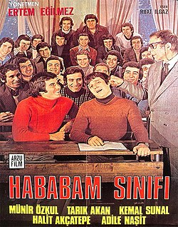

Rıfat Ilgaz, Hababam Sınıfı eserinde, dönemin eğitim sistemine mizahi bir dille eleştiriler getirir. Özel Çamlıca Lisesi'ne yeni atanan müdür muavini ve tarih öğretmeni olan Mahmut Hoca (Kel Mahmut) kopya çeken, okuldan kaçıp maçlara giden, hocalarla sürekli kafa bulan öğrencilerle dolu okulun 6-A Edebiyat sınıfını, namıdiğer Hababam Sınıfı'nı ilginç ve ağır ceza yöntemleriyle disiplin altına almaya çalışır. Öğrenciler derslerden kaçmak, öğretmenleri kandırmak ve okul kurallarını esnetmek için sürekli planlar yaparlar. Ancak, her plan mutlaka komik ve düşündürücü sonuçlara yol açar.

Anasayfa